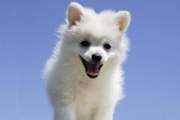

能够到达金字塔顶端的只有两种动物，一是雄鹰，靠自己的天赋和翅膀飞了上去，有另外一种动物，也到了金字塔顶端，那就是蜗牛，。我相信蜗牛绝对不会一帆风顺的爬上去，一定会掉下来，再爬，掉下来，再爬。但是，蜗牛只要爬上了金字塔顶端，它眼中所看到的世界，它收获的成就，跟雄鹰是一摸一样的。所以生命的起点由不得自己选择，但是生命的终点是自己决 定。
-
很多人希望自己成功，想选择一条别人没有走过的路，其实只要是路，就已经被人走过了，我们要做的，是应该在别人走过的路上，比别人走得更久，比别人走得更远，走得更久就能够走出别人没有走出的距离，走得更远就能够看到别人所没有看到的风景
-
摔倒了十次就再也不愿爬起来，他就永远是失败，但是他哪怕是摔倒了一万次，他一万零一次继续站起来，往前走实在站不起来了，我爬也要爬着往前走，这就叫成功。
很多人希望自己成功，想选择一条别人没有走过的路，其实只要是路，就已经被人走过了，我们要做的，是应该在别人走过的路上，比别人走得更久，比别人走得更远，走得更久就能够走出别人没有走出的距离，走得更远就能够看到别人所没有看到的风景
自信是成功的前提，你拥有自信，就拥有成功的一半机会。相信自己是最棒的就一定会成就一定的事业。拥有自信的人之所以会心想事成、走向成功，是因为他们都有着巨大无比的潜能等着去开发;消极失败的心态之所以会使人怯弱无能、走向失败，是因为它使人放弃潜能的开发，让潜能在那里沉睡、白白浪费。
一个人相信自己是什么，就会是什么。一个人心里怎样想，就会成为怎样的人。这从心里学上讲是有一定的道理的。我们每一个人心里都有一幅心里蓝图，或是一幅自画像，有人称它为运作结果。如果你想象的是做最好的你，那么你就会在你内心的荧光屏上看到一个踌躇满志、不断进取、勇于开拓创新的自我。同时还会经常收到我做的很好，我以后还会做的更好之类的信息，这样你注定会成为一个最好的你。
美国哲学家爱默生说：“人的一生正如他一天中所想的那样，你怎么想，怎么期待，就有怎样的人生。”美国有名的钢铁大王安德鲁·卡耐基就是一个充分发挥自己创造机会的楷模。他12岁时由英格兰移居美国，先是在一家纺织厂做工人，当时他的目标是“做全厂最出色的工人。”因为他经常这样想，以这样做，最终他实现了他的目标。后来命运有安排他当邮递员，他想的是怎样成为“全美最杰出的邮递员。”结果他的这一目标也实现了。他的一生总是根据自己所处的环境和地位塑造最佳的自己，他的座右铭就是“相信自己是最棒的。”
today i shed my old skin which hath, too long, suffered the bruises of failure and the wounds of mediority.
today i will pluck grapes of wisdom from the tallest and fullest vines in the vineyard,for these were planted by the wisest of my profession who have come before me,generation upon generation.
yet i will not fail, as the others, for in my hands i now hold the charts which will guide through perilous waters to shores which only yesterday seemed but a dream.
failure no longer will be my payment for struggle. just as nature made no provision for my body to tolerate pain neither has it made any provision for my life to suffer failure. failure, like pain, is alien to my life. in the past i accepted it as i accepted pain. now i reject it and i am prepared for wisdom and principles which will guide me out of the shadows into the sunlight of wealth, position, and happiness far beyond my most extravagant dreams until even the golden apples in the garden of hesperides will seem no more than my just reward.
today my old skin has become as dust. i will walk tall among men and they will know me not , for today i am a new man, with a new life.


姓名：Cathy
性别：female
年龄：twenty-one
星座：Capricorn
政治面貌：probationary Party member
爱好：playing badminton,playing cards,listening English songs and so on.
座右铭：Don't be the best,only be the better!
最喜欢的句子：To strive, to seek, to find, and not to yield.